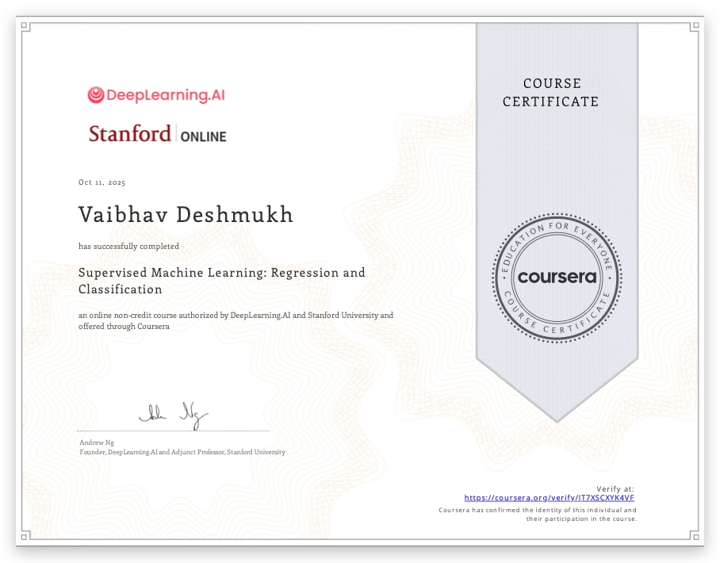
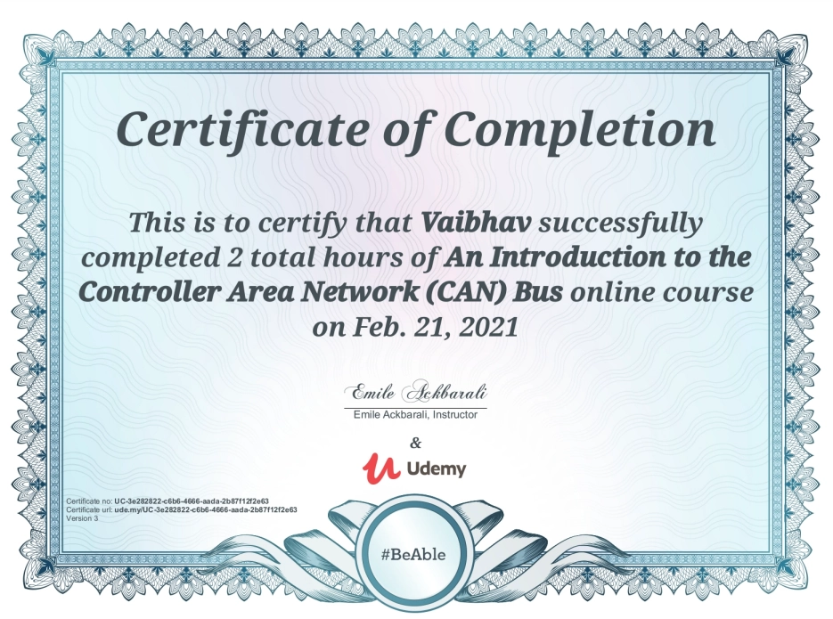
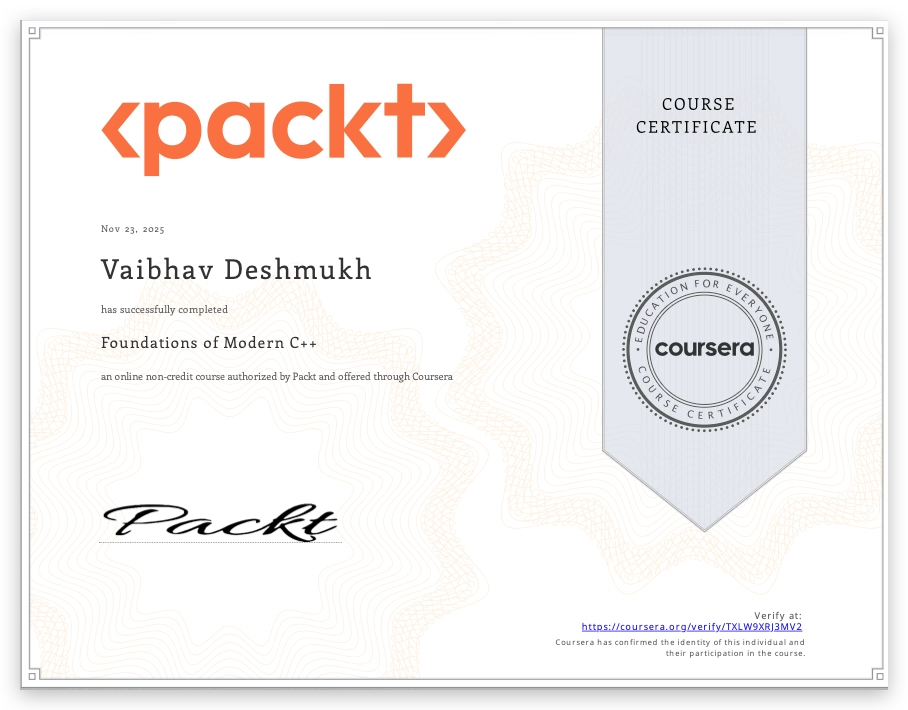
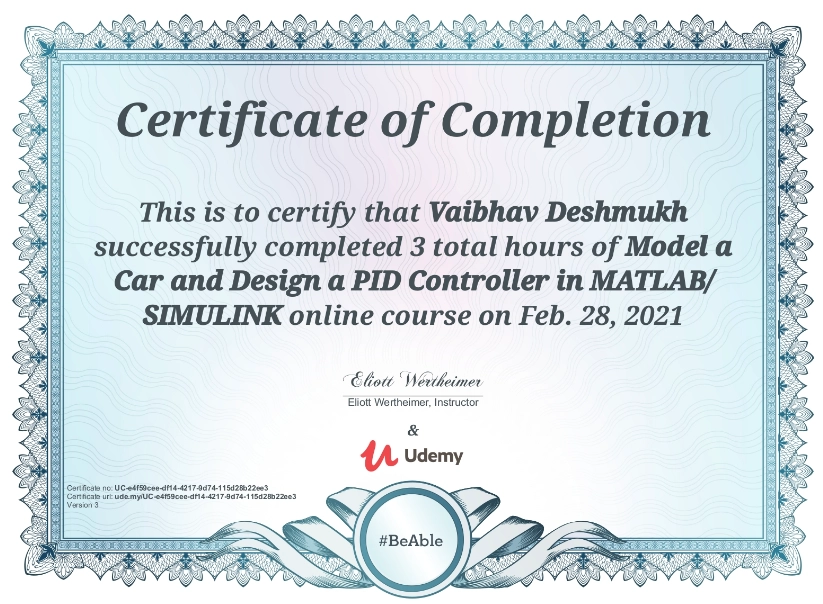
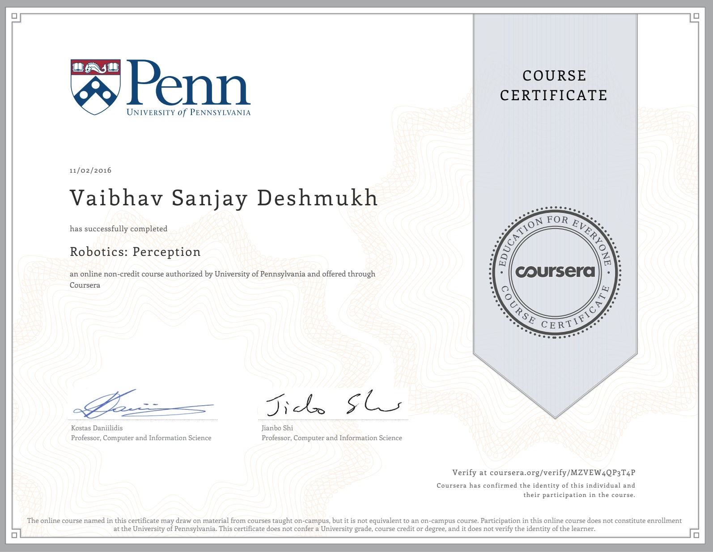
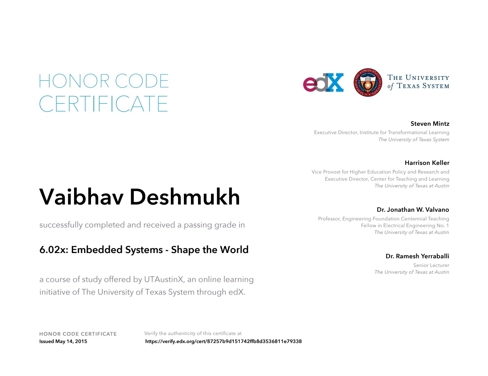

Professional Experience
Automated Driving Algorithm Developer
Aptiv Corporation — Troy, MI
Nov 2021 – Present · 4.5 years
- Lead development of the lateral-velocity-based Lane Keep Assist algorithm for production vehicles.
- Tuned Model Predictive and PID controllers in-vehicle for production-grade software, handling real-time and performance constraints (closed-loop and open-loop control).
- Lead development converting front-wheel-steer control algorithms to be compatible with 4-wheel-steer systems.
- Develop and maintain Level 2 and Level 2+ Highway Assist and Lane Keep Assist features.
- Black-box system identification and deployment — converted customer-provided black-box models into transfer function models deployed in production vehicles.
- dSPACE, embedded and CarMaker based vehicle simulation testing of ADAS algorithms and features.
- Developed and validated trailer stability and oscillation estimation for the Highway Assist with Trailer feature.
- Developed universal resimulation scripts capable of handling multiple customer software builds.
- Led development and testing of trailer mass estimation software.
- Debugged and resolved vehicle state estimation errors in production software.
- Developed a regression framework for validating new algorithm development.
- Managed the software release process and resolved integration issues (C++, C).
- Designed Simulink-based algorithms and state machines handling the safety-critical Level 2 mode manager.
- Implemented algorithms managing system degradation and ODD-related system failures.
- Created Simulink-based test cases enabling continuous system validation and verification.
- Validated and assessed algorithm performance on real and synthetic data.
- Supported on-road testing and data collection efforts.
Control Systems Engineer
Caterpillar Trimble Control Technologies
Apr 2018 – Oct 2021 · 3.5 years
- System identification and analysis for hydraulic cylinder first-order systems.
- Designed algorithms for machine forward kinematics and angle calculation based on Euler rotations.
- Resolved run-time errors in control models — math errors, rest-detection logic faults, blade angle errors.
- Wrote Python and C++ unit tests for machine measure-up and vector math.
- Debugged state estimator and controller errors observed during field testing using MATLAB and Simulink.
- Designed MATLAB apps and tools to aid data collection and processing.
Robotics Engineering Intern
Mitsubishi Electric Research Laboratories — Cambridge, MA
Nov 2017 – Apr 2018
- Researched prevalent algorithms for implementation on real-world robots.
- Implemented Python scripts for the Gazebo and TurtleBot robotic environments.
- Validated and implemented algorithms on three TurtleBots equipped with lasers, Kinect and cameras in a Linux environment.
Graduate Research Engineer — Control Systems
ASU Autonomous Collective Systems Laboratory — Tempe, AZ
Nov 2017 – Oct 2018 · 1 year
- Researched algorithms and techniques used in small-sized swarm robots.
- Simulated control algorithms in Simulink and the Gazebo robotic simulation platform.
- Published two research papers on novel control algorithms in swarm robotics.
- Implemented these control algorithms on small-sized ground robots.
Graduate Engineer Trainee
Hero MotoCorp Ltd. — India
Jul 2014 – Jun 2015 · 1 year
- Analyzed vehicle logs, created performance models and applied data-fitting techniques for analysis and coverage reports.
- Conducted performance testing on motorcycles — brake, speed and acceleration tests.
Projects
A few highlights from personal and side work on controls, estimation and simulation. Each card opens a dedicated page with the full write-up.
View all projects →Project · 2018
Formation Control on Mobile Robots
Formation control algorithms on ROS, in Python — simulated in Gazebo, then deployed on TurtleBots.
Open project pageProject · 2026
Curvature-Preserving 4-Wheel Steering
Adapting an existing front-wheel-only steering controller to a 4-wheel-steer vehicle without redesigning it — interactive path-tracking demo.
Open project pageProject · 2021
Inverted Pendulum on a Cart
Modeling, LQR control and Kalman-filter state estimation for an inverted pendulum on a cart, in MATLAB.
Open project pageProject · 2018
Controller Design for Markov Chain Models
LMI-based controller design for stabilizing and controlling Markov chain models, in MATLAB — validated in simulation and on real ground robots.
Open project pageStrengths & Tooling
Languages
Controls & Estimation
Development & Verification
Simulation & Hardware
Machine Learning
Process & Collaboration
Education
Research Publications
Certifications
Online coursework taken outside of work to go deeper on the topics my day job touches — machine learning, ADAS, C++, robotics and embedded systems.

Machine Learning 2 courses
ADAS 1 course
C++ 3 courses
Car Modelling 1 course
Robotics 3 courses
Embedded Systems 1 courseContact
Location
Troy, MI — 48084
Phone